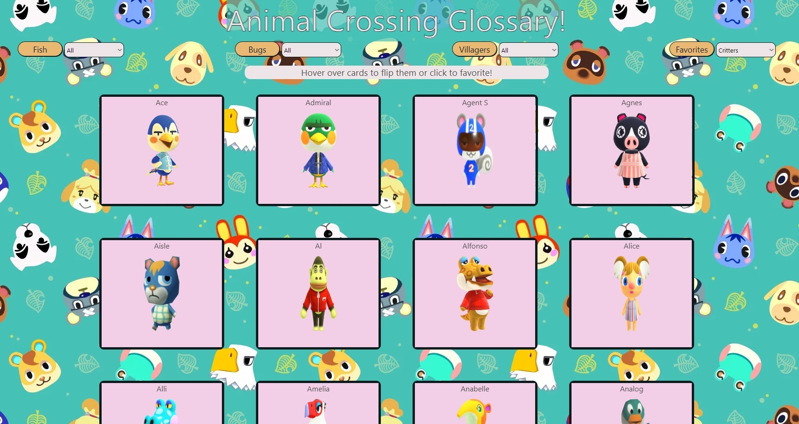

Animal Crossing Glossary
This site is a glossary site based on the Nookipedia API built off the Nookipedia wiki. This was developed due to the countless trips I took to find what seasons and locations were required to catch a fish to fill my museuem in game. The site compiles fish and bugs (and villagers for fun) so that they're all in one place.
